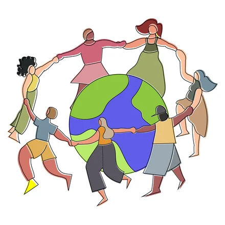

¿Paz Mundial o Un Millón de Dólares
03-22-2026

Imagina que se te aproxima un genio de repente --me refiero a un genio como el genio de la lámpara, no genio como Albert Einstein-- y te dice "Te puedo dar un millón de dólares, libres de impuestos, sin truco, sin robárselo a nadie, o puedo hacer que haya paz en el mundo ahora mismo; ¿qué eliges?"
En serio, ¿qué eliges?
Mi primer pensamiento fue el millón de dólares, por puro egoísmo, por instinto de preservación, supongo. Pero casi inmediatamente después pensé en la paz mundial, claro, no hay que ser egoístas, si tuviera la oportunidad de ayudar, genuinamente, a la humanidad —y más de un segundo para pensar en la respuesta—, claro que lo haría. Pero luego pensé algo más que me hizo dudar.
¿La paz mundial cómo? ¿A costa de qué? Y sobre todo, ¿a costa de quién? Porque la triste realidad es que en la mayoría de los conflictos armados que hay en el mundo en la actualidad, no podrías elegir objetivamente qué lado tiene la razón; muchas veces ambos lados tienen algún argumento legítimo. La justicia no es tan objetiva como nos dicen los idealistas, la mayoría de las veces. O incluso, dicho de otra manera: no es que ambos tengan razón, es que ambos están mal.
Toma, por poner el ejemplo más presente, la guerra en Irán. ¿Quién de los dos lados quieres que gane? Ninguno, ambos merecen perder. La guerra entre Ucrania y Rusia a lo mejor es un ejemplo más claro de quién es el invasor y quién el invadido, pero si uno indaga un poco está claro que el gobierno de Ucrania no está completamente libre de culpa. Como esos hay muchos más ejemplos menos mediáticos.
Y también habría que considerar conflictos locales entre gobiernos, opresores, seguramente, y levantamientos armados que también son violentos y también tienen su propia agenda y están más interesados en el poder por el poder que en traer justicia a la gente.
Dicen que la Historia la escriben los vencedores; y si uno estudia Historia con un poco más de pensamiento crítico es bastante obvio que la Historia es sucia, está llena de lagunas, mentiras y propaganda.
Me quedo con el millón de dólares, gracias. Para mí y mi familia y claro que haría lo que pueda por ayudar localmente, pero asegurándome de no causar más daños.
Hashtag ShowerThoughts, como dicen.